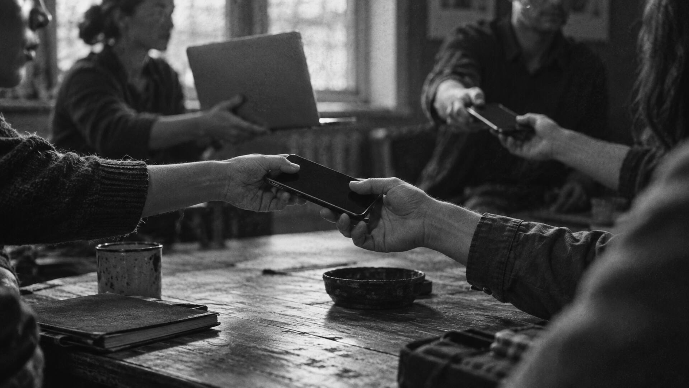
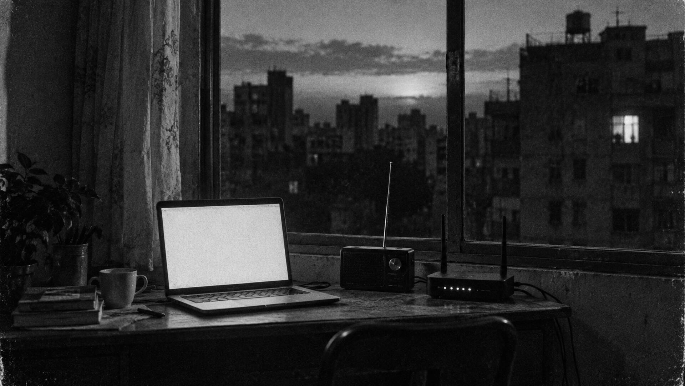

01 · Pay offline
Your device is the bank
Your wallet creates and signs the payment itself. No server, no account, no signal needed. Enter an address and an amount, and press Send.
Install as user →Send and receive private Zcash payments phone to phone and laptop to laptop, with no signal and no bank in between. Your payment travels through the people around you and settles as soon as a gateway in the mesh gets back online.
Scroll ↓Card terminals, banking apps and crypto wallets all assume a live connection. When it disappears, so does the ability to pay, exactly when people need it most. BitChat kept messages moving through internet shutdowns. Offline Zcash does the same for money.
Governments switch off the internet during protests, elections and wars to silence the crowd. Payment rails that need permission are switched off with it.
Floods, cyclones and landslides cut coastal and hill regions off for days. Even the wealthiest are stuck when there is no way to pay.
Rural villages, ships, mountains and border towns live with weak or no coverage every day, not only in emergencies.
Zcash is building a private economy and Logos a parallel society, yet both still lean on a centralised internet. Offline Zcash removes that last dependency.
Your wallet creates and signs the payment itself. No server, no account, no signal needed. Enter an address and an amount, and press Send.
Install as user →
Nearby devices pass the sealed payment from one to the next until it reaches the person you are paying. Nobody along the way can read it or change it, and the payee gets a signed receipt.

When a gateway, any device in the mesh that is set up to reach the internet, gets a connection, it publishes the payment to the Zcash network and passes the confirmation back to everyone.
Install as gateway →Everything people like about cash, plus what cash can't do.
Pay and get paid with no signal, no Wi-Fi and no data plan. A local network is enough.
Built on shielded Zcash, and every payment is sealed for the person you pay. Devices carry it along without being able to read it.
No bank, card network or payment company has to approve your payment. It goes straight from you to the person you pay.
Every device relays for its neighbours. The more people join, the further payments reach.
Most people only need the wallet. A group needs one gateway: a laptop that also has internet and keeps everyone's payments moving to the network.
Free Logos Basecamp app
Mac with Apple silicon, or a recent Linux
Same Wi-Fi or local network as the group
An internet connection
Download it from the Basecamp release page and open it. On a Mac, right-click → Open the first time.
In Basecamp, open Settings → Package Repositories, paste this link, click Add, then Refresh.
https://offlinezcash.com/basecamp
Then open Manage Packages, search zcash, and install Offline Zcash service and Offline Zcash.
Open Offline Zcash and click Start without invite. Your wallet and address are created on your device, and nobody else ever sees your keys.
Copy your address and add test coins from a free testnet faucet. The wallet gets them ready for offline use on its own. Wait until they show as mined, then you're set to go offline.
Paste the other person's address under Send, enter an amount and press Send. To get paid, share Your address. Your payments list shows each one move from sent to confirmed.
Use a laptop that has internet and is on the same Wi-Fi or local network as your group. Download Basecamp from the Basecamp release page and open it.
Open Settings → Package Repositories, paste this link, click Add, then Refresh.
https://offlinezcash.com/basecamp
In Manage Packages, search zcash and install Offline Zcash service, Offline Zcash Organiser and Offline Zcash Gateway. Add Offline Zcash too if you also want to pay from this laptop.
Open Offline Zcash Organiser, keep This device is the gateway ticked and click Create gateway session. Nobody else needs an invite: their wallets find your gateway automatically.
Open Offline Zcash Gateway, click Check chain service, then Start gateway. No server or special hardware is needed.
Leave Basecamp open and connected. Your gateway quietly sends the group's payments to the Zcash network and brings the confirmations back. Share your gateway's ID from Debug with your group so they know they're connected to you.
Offline Zcash is an open-source wallet and mesh network for Logos Basecamp that lets people send private Zcash payments without an internet connection. A device signs a shielded payment offline, nearby devices relay it over Wi-Fi or a local network, and a gateway publishes it to the Zcash network once it is online.
Your wallet builds and signs the payment on your device, using coins you prepared while you were online. The sealed payment hops between nearby devices until it reaches the person you are paying, who checks it and sends back a signed receipt. The final confirmation arrives once a gateway connects.
A gateway is a laptop in the mesh that has internet access and was set up as the gateway when its group was created. It submits payments to the Zcash network and reports confirmations back. One gateway can serve a whole group, and anyone can run one with the Organiser and Gateway apps.
Cash cannot travel beyond arm's reach, and ordinary crypto wallets need the internet to send anything. Offline Zcash combines what both lack: digital, private payments that move through the people around you, the way BitChat moves messages during an internet shutdown.
Today Offline Zcash runs in Logos Basecamp on Mac (Apple silicon) and Linux laptops, over Wi-Fi or a local network. Bluetooth on Linux and an Android app exist as experiments and have not yet been tested on real radios.
Not yet. Offline Zcash is an experimental prototype on the Zcash test network, using free test coins. It has not had a security review, and confirmations are reported by your group's gateway rather than proved independently, so use a gateway run by someone you trust.